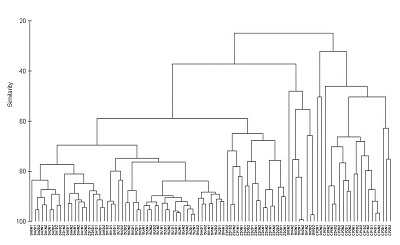
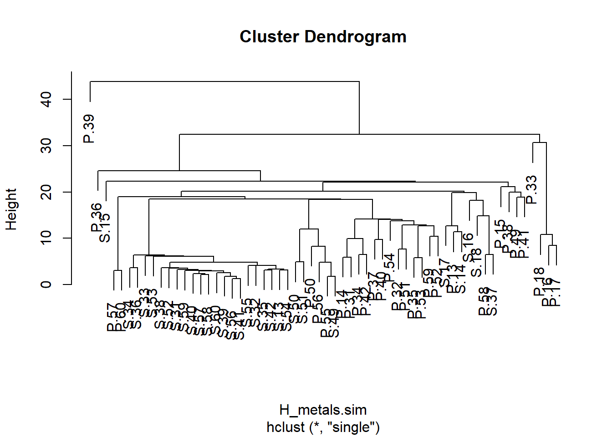
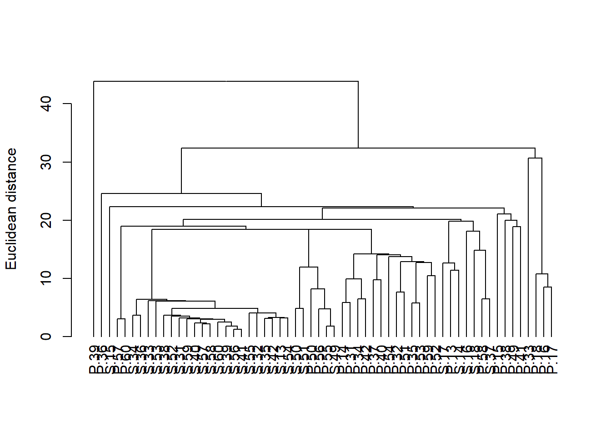
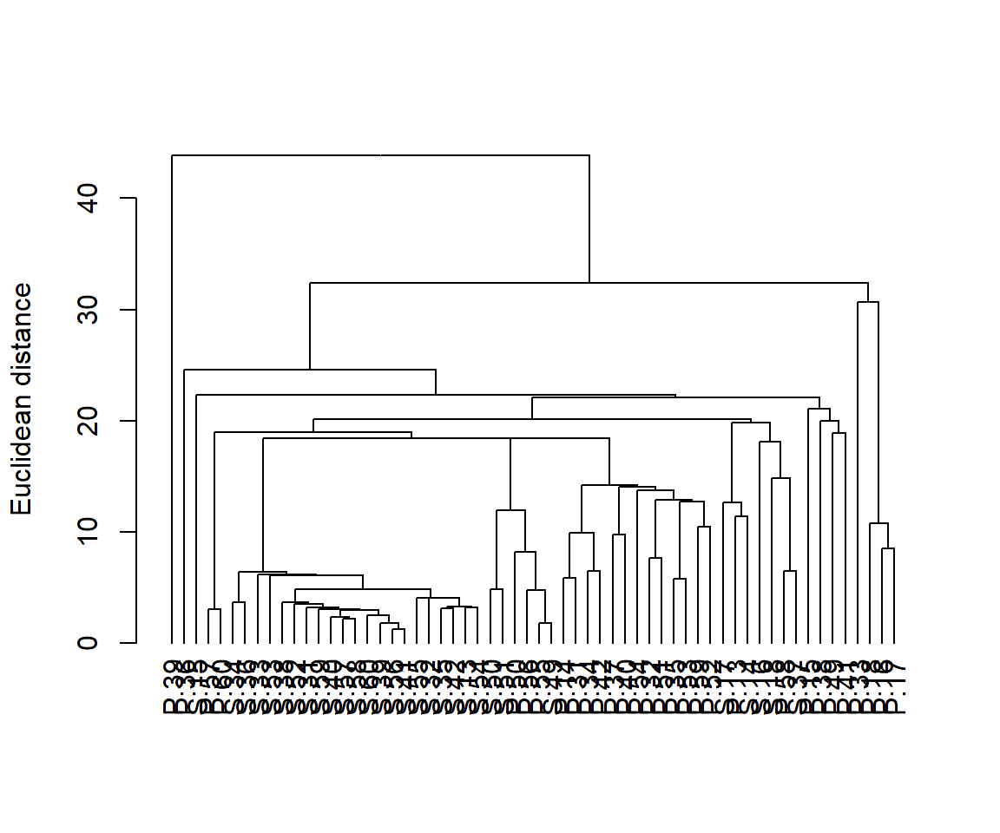

Harbour_metals <- read.csv(file = "Harbour_metals.csv", header = TRUE)Análisis de Clúster
El análisis de clúster es un método de clasificación que tiene como objetivo agrupar objetos en función de la similitud de sus atributos. Se utiliza comúnmente para agrupar una serie de muestras basadas en múltiples variables que han sido medidas en cada muestra. El procedimiento produce un diagrama en forma de árbol (un dendrograma) que ilustra las relaciones entre todas las muestras basadas en una medida definida de similitud.

Existen muchos métodos disponibles para el agrupamiento (aglomerativo, divisivo, no jerárquico, etc.). Aquí tienes algunas instrucciones para uno de los métodos más comúnmente utilizados, el agrupamiento jerárquico aglomerativo. Este procedimiento involucra una serie de pasos:
- Calcular una matriz que contenga todas las similitudes entre pares de objetos.
- Unir los objetos que son más similares.
- Recalcular la matriz de similitud para ese clúster frente a todos los objetos restantes.
- Repetir los dos últimos pasos hasta que todos los objetos estén unidos.
Ejecutando el análisis

En este ejemplo, utilizaremos el análisis de clúster para visualizar las diferencias en la composición de contaminantes metálicos en las algas marinas del Puerto de Sídney (datos de (Roberts et al. 2008)). Descarga el conjunto de datos, Harbour_metals.csv, y cárgalo en R.
Estos datos contienen las concentraciones de siete metales medidos en 60 muestras, la mitad de la alga marina Padina crassa y la mitad del Sargassum linearifolium.
Las dos primeras columnas son variables categóricas que agrupan las muestras por sitio y especie de alga marina. La tercera columna tiene etiquetas únicas para cada muestra replicada y las columnas restantes son las concentraciones de metales.
El análisis de agrupamiento se realiza solo en las variables de respuesta, por lo que necesitamos crear un marco de datos solo con las concentraciones de metales (columnas 4 a 8).
Harbour_metals2 <- Harbour_metals[, 4:8]Para ayudar a interpretar el gráfico, podemos agregar las etiquetas de las muestras como nombres de fila en este marco de datos.
rownames(Harbour_metals2) <- Harbour_metals$RepPara realizar el análisis de agrupamiento, necesitamos crear una matriz que cuantifique la similitud entre cada par de muestras. Aquí utilizaremos la distancia euclidiana como nuestro coeficiente de similitud, pero hay otros para elegir (ver más abajo).
H_metals.sim <- dist(Harbour_metals2, method = "euclidean")Luego, utilizamos la función hclust con un argumento que especifica el método de enlace (aquí utilizaremos el método de enlace simple).
H_metals.cluster <- hclust(H_metals.sim, method = "single")Finalmente, trazamos el objeto que fue creado por la función hclust.
plot(H_metals.cluster)
Podemos mejorar esto un poco alineando todas las muestras en la parte inferior convirtiéndolo en un objeto dendrograma (la función as.dendrogram) y trazándolo (aunque este gráfico predeterminado aún es un poco feo y necesitaría trabajar en etiquetas y ejes antes de estar listo para su publicación).
plot(as.dendrogram(H_metals.cluster), ylab = "Euclidean distance")
Interpretación de los resultados
Un dendrograma tiene una rama para cada muestra unida en nodos que se relacionan con el valor del coeficiente de similitud que une los dos objetos. La interpretación de todas las relaciones se realiza mediante el examen de la estructura de ramificación (qué objetos se unen más estrechamente entre sí) y de las similitudes en las que se unen. Los objetos que se unen cerca de las puntas de las ramas son más similares entre sí que aquellos que se unen más cerca de la base del árbol (ten en cuenta que el dendrograma predeterminado en R se parece a un árbol boca abajo, con las ramas en la parte inferior y el tronco en la parte superior).
Se podría evidenciar una fuerte evidencia de grupos distintos si hubiera grupos donde las muestras dentro de un grupo son mucho más similares entre sí que las muestras en otros grupos.
Supuestos a verificar
Antes de ejecutar un análisis de agrupamiento para crear un dendrograma, debes considerar:
Qué medida de similitud usar. Los dendrogramas se pueden crear a partir de cualquier matriz de similitud. Hay muchas medidas de distancia que se pueden utilizar para describir la similitud entre muestras. La función dist en R tiene opciones como "euclidean", "maximum", "manhattan", "canberra", "binary" o "minkowski" (especificadas en el argumento method de dist). Otras medidas están disponibles en otros paquetes (por ejemplo, la medida Bray-Curtis, que se recomienda para análisis de datos de composición de especies, está disponible en el paquete vegan).
Si los datos necesitan ser transformados o estandarizados. Si las variables se miden en escalas muy diferentes, o si hay valores atípicos, entonces la estructura del dendrograma estará fuertemente influenciada por los valores más grandes en el conjunto de datos. Las variables se pueden transformar o estandarizar para disminuir la influencia de los valores grandes (es decir, tratar todas las variables en igualdad de condiciones).
Qué método se utilizará para crear el dendrograma. La estructura de los dendrogramas también puede ser sensible al algoritmo utilizado para construir el árbol (método de enlace). En el ejemplo anterior, utilizaste el método de enlace simple. La función hclust en R tiene varios disponibles, como "ward", "single", "complete", "average", "mcquitty", "median" y "centroid".
Comunicación de los resultados
Escrita. La interpretación del dendrograma se describe en el texto de la sección de Resultados (por ejemplo, ¿hay grupos evidentes de muestras? ¿hay muestras que son muy diferentes del resto?). No hay resultados numéricos que informar.
Visual. Los resultados de los análisis de agrupamiento se comunican visualmente con el dendrograma. Es importante etiquetar los ejes para mostrar qué medida de similitud se utilizó en el análisis.
Si hay grupos predefinidos de muestras (por ejemplo, muestras agrupadas por especie en el ejemplo anterior), generalmente se etiquetan las muestras o se les proporcionan símbolos codificados por colores para permitir una visualización más fácil de los patrones en el dendrograma. Con conjuntos de datos grandes, las etiquetas individuales para cada muestra (como hicimos aquí) generan gráficos muy completos.
Con muchas muestras en tu dendrograma, a menudo es necesario etiquetarlas de alguna manera (por ejemplo, por color) para ayudar a visualizar los patrones. El paquete dendextend te permite hacer esto. Aquí tienes un código para producir el mismo dendrograma con las muestras codificadas por color según la ubicación.
library(dendextend)
dend <- as.dendrogram(H_metals.cluster)
sample_colours <- as.numeric(Harbour_metals$Location)
sample_colours <- sample_colours[order.dendrogram(dend)]
labels_colors(dend) <- sample_colours
plot(dend, ylab = "Euclidean distance")
Más ayuda
Puedes acceder a la ayuda de R para las funciones principales utilizadas aquí escribiendo ?hclust, ?dist o ?as.dendrogram. Hay muchos paquetes de R asociados con los diferentes tipos de análisis de agrupamiento. Consulta una larga lista de paquetes posiblemente útiles aquí.
Quinn, GP y MJ Keough (2002) Diseño experimental y análisis de datos para biólogos. Cambridge University Press. Capítulo 18. Escalamiento multidimensional y análisis de agrupamiento.
McKillup, S (2012) Estadística explicada. Una guía introductoria para científicos de la vida. Cambridge University Press. Capítulo 22. Conceptos introductorios del análisis multivariado.
Visualización de dendrogramas en R
Autor: Alistair Poore
Año: 2016
Última actualización: Nov. 2023